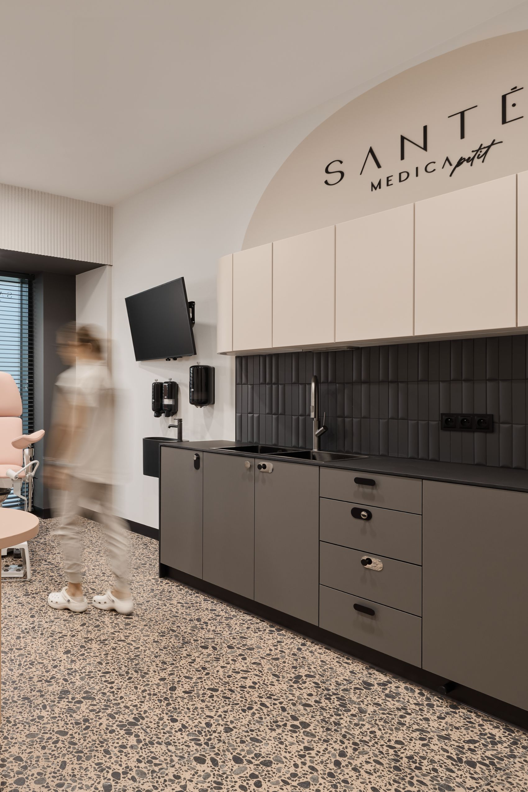

Specjalizacja
Medycyna estetyczna w Gdańsku
Zabiegi na twarz i ciało prowadzone tak, aby efekt był świeży, naturalny i zgodny z Twoją urodą.

O specjalizacji
Kiedy warto umówić wizytę?
Najpierw rozmawiamy o potrzebach skóry, stylu życia i oczekiwaniach. Dopiero potem dobieramy terapię. W medycynie estetycznej stawiamy na jakość skóry, proporcje, regenerację i efekty, które nie odbierają twarzy naturalności.
Dla kogo?
- utrata jędrności i elastyczności skóry
- zmarszczki, przebarwienia i nierówna struktura
- blizny potrądzikowe i rozszerzone pory
- skóra zmęczona, odwodniona lub pozbawiona blasku
- potrzeba planu zabiegowego bez przesady i pośpiechu
Jak wygląda opieka?
- analiza skóry i oczekiwań
- kwalifikacja do terapii oraz wykluczenie przeciwwskazań
- plan zabiegowy z priorytetami
- zalecenia pozabiegowe i pielęgnacyjne
Najczęstsze pytania
Nie zawsze. Terapie regeneracyjne i biostymulujące często budują efekt stopniowo, poprawiając jakość skóry przez kolejne tygodnie.
Nie. Zabieg wymaga kwalifikacji, szczególnie przy aktywnych stanach zapalnych skóry, ciąży, infekcjach lub skłonności do bliznowców.
Dalej